설비를 등록해 명령을 보내고, 장애를 해소하고, 웨이브로 업무 오더를 내보내고, 분류기와 병목 회피까지 확인합니다.
무엇을 · 왜#
창고 자동화는 두 계층으로 나뉩니다. WES(작업 실행)는 「무엇을 언제 옮길지」를 업무 오더와 웨이브로 묶고, WCS(설비 제어)는 설비마다 명령을 내리고 상태와 장애를 받습니다. 명령을 내리는 쪽과 결과를 보고하는 쪽은 역할이 나뉘어 있어서, 관리자나 에이전트는 설비의 명령 완료를 대신 보고할 수 없습니다.
샘플의 범위
- 실제 설비는 없습니다. 설비 쪽 보고는 게이트웨이 전용 계정
wcs-gateway-a@demo.local로 보냅니다. 이 장에서는 MCP 도구(report_equipment_status,report_command_result,raise_equipment_fault)를 직접 호출했습니다. PLC 프로토콜 연동은 범위 밖입니다. 다음 장의 시뮬레이터 워커를 쓰면 이 보고를 자동으로 처리할 수 있습니다. - 경로 계획이나 교통 제어는 없습니다. 후보 설비를 골라 명령을 보내는 데까지입니다.
MCP 도구는 터미널에서 다음과 같이 호출합니다. 설비 ID와 버전은 WCS Monitor나 get_equipment_status 도구로 확인합니다.
curl -s -X POST http://127.0.0.1:8199/mcp \
-H 'content-type: application/json' -H 'accept: application/json, text/event-stream' \
-d '{"jsonrpc":"2.0","id":1,"method":"tools/call","params":{"name":"report_equipment_status",
"arguments":{"equipment_id":"<설비 ID>","new_status":"IDLE","expected_version":1}}}'
따라 하기#
cd supabase && supabase db reset으로 처음 상태로 되돌린 뒤 시작합니다. 업무 오더가 참조할 입고 문서가 필요하므로 앞 장의 순서로 RFQ를 만들고 Confirm PO까지 해 둡니다.
- 설비 등록.
wh-manager-a@demo.local로 로그인해 WCS Equipment를 엽니다. Equipment CodeAGV-07, TypeAGV, ZoneZONE-B를 넣고 Register Equipment를 누릅니다. 상태는OFFLINE, Version 1입니다.AGV-07 등록 - 기동 보고. 게이트웨이 계정으로
IDLE을 보고합니다(report_equipment_status). 화면을 새로 고치면IDLE, Version 2이고 Dispatch MOVE 칸이 열립니다.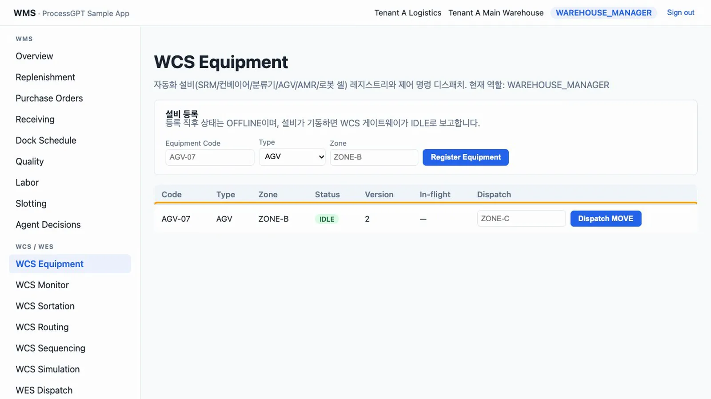
IDLE - 이동 명령. to_zone 칸에
ZONE-C를 넣고 Dispatch MOVE를 누릅니다. 설비는RUNNING, In-flight는MOVE / PENDING입니다.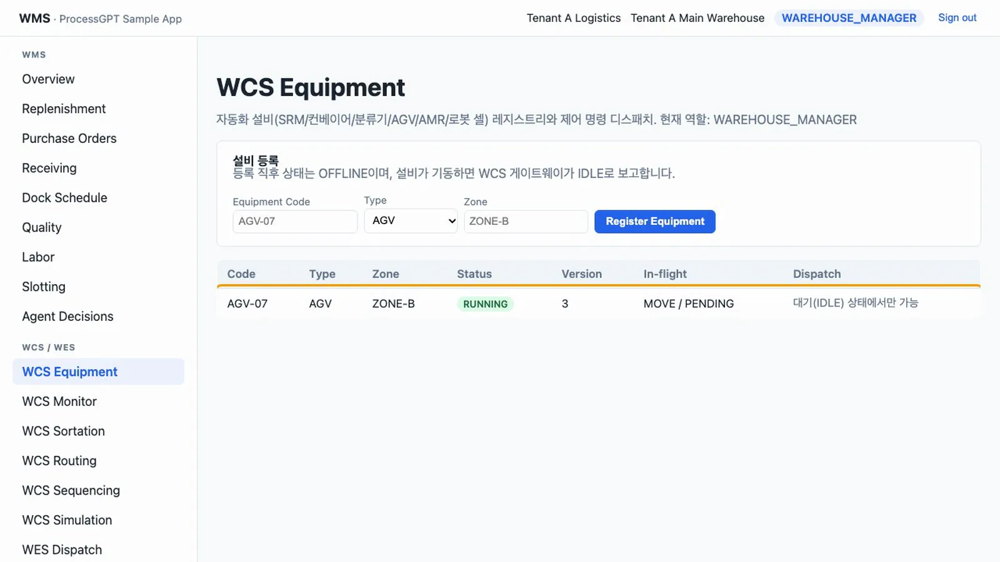
이동 명령 - 모니터. WCS Monitor에 같은 명령이 보입니다. 게이트웨이가
ACKNOWLEDGED,IN_PROGRESS,COMPLETED를 차례로 보고(report_command_result)한 뒤 Refresh를 누르면COMMAND_COMPLETED이벤트가 쌓이고 설비는IDLE로 돌아옵니다.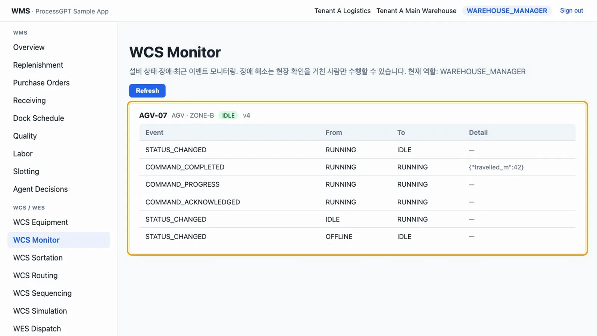
모니터 이벤트 - 장애.
ZONE-D로 명령을 하나 더 보낸 뒤 게이트웨이가MOTOR_OVERHEAT/CRITICAL을 보고합니다(raise_equipment_fault). 설비는FAULT, 진행 중이던 명령은 실패(COMMAND_FAILED)가 되고, WCS Equipment의 Dispatch 칸에는 「장애 해소 후 가능」이 보입니다.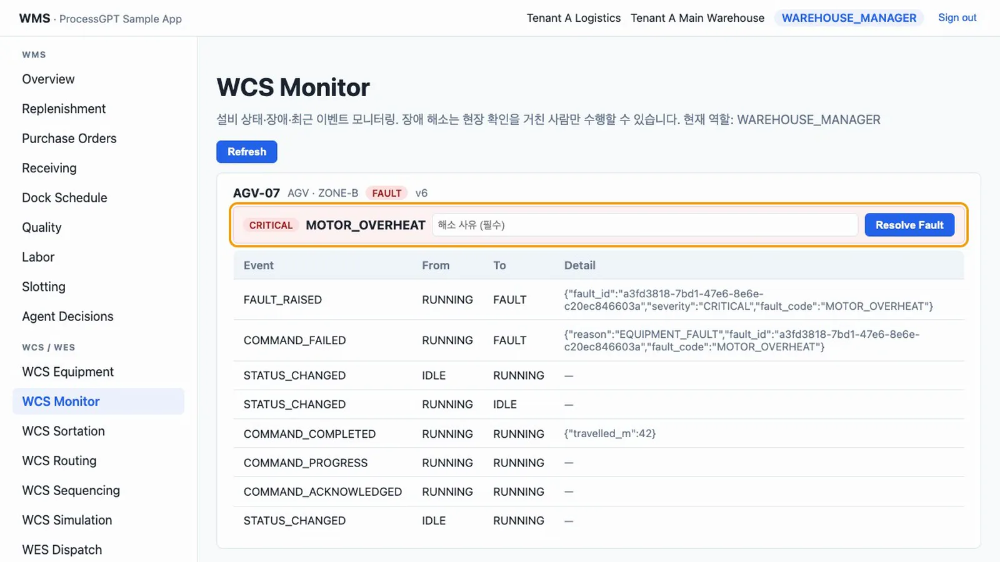
장애 - 장애 해소. 장애 해소는 사람 몫입니다.
wcs-operator-a@demo.local로 로그인해 WCS Monitor에서 해소 사유(예: 과열 센서 교체 및 냉각팬 청소 완료)를 적고 Resolve Fault를 누릅니다.FAULT_CLEARED가 남고IDLE로 돌아옵니다.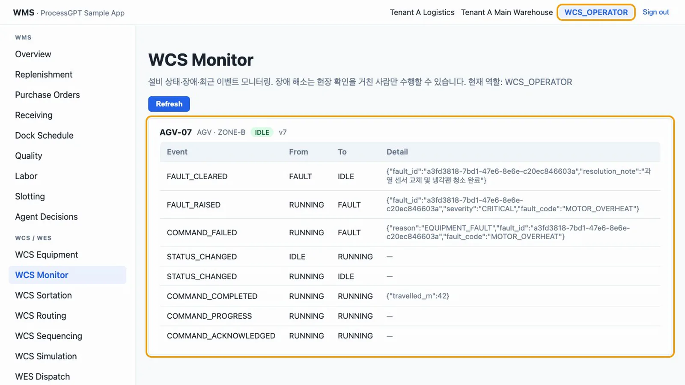
장애 해소 - 웨이브와 업무 오더. 같은 방법으로
AGV-08(ZONE-B)을 등록하고 기동시킵니다.wh-manager-a@demo.local로 로그인해 WES Dispatch를 열어 Open Wave를 누르고, Equipment TypeAGV, Target ZoneZONE-B, to_zone을ZONE-C,ZONE-D,ZONE-E로 바꿔 가며 Create Work Order를 세 번 누릅니다. 릴리즈 전까지 세 건 모두QUEUED입니다.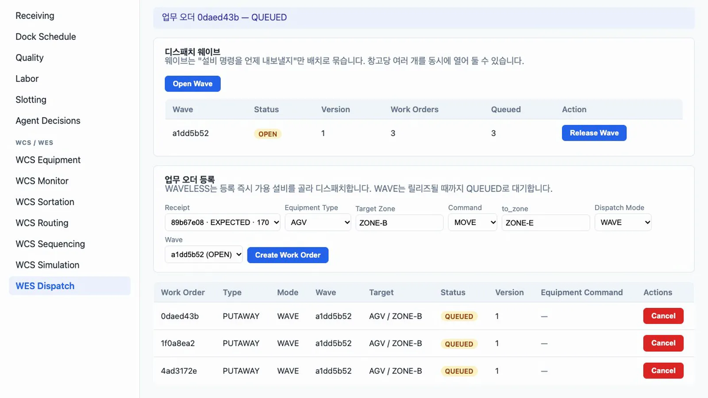
QUEUED 3건 - 릴리즈. Release Wave를 누릅니다. 대기 중인 운반차 두 대에 두 건이 배정되어
DISPATCHED가 되고, 남은 한 건은NO_EQUIPMENT_AVAILABLE: 1 work order(s) stay QUEUED경고와 함께QUEUED로 남습니다.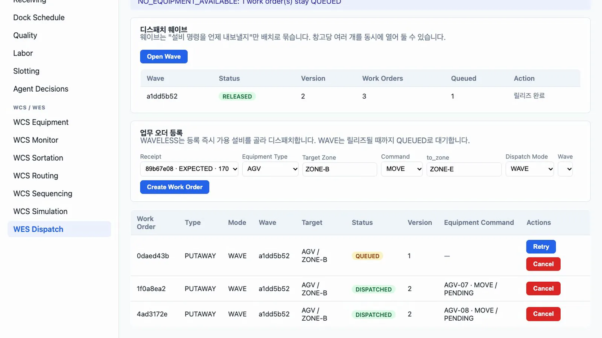
릴리즈 - 재시도. 한 대의 명령을 완료로 보고한 뒤 새로 고치면 업무 오더도
COMPLETED로 바뀝니다. 남은 건의 Retry를 누르면 대기 중인 운반차에 배정됩니다.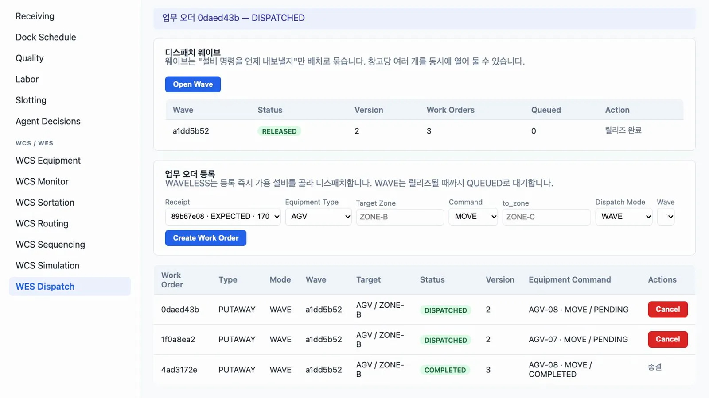
재시도 - 분류기 프로파일.
SORT-01(TypeSORTER, ZoneZONE-S)을 등록하고 기동시킵니다. WCS Sortation에서 Min Carton Gap 150, Speed ModeFIXED, Min Speed 0.5, Max Speed 2, UnitMPS, Sensor Window 80을 넣고 Create Profile을 누릅니다. 프로파일이 없으면 분류 명령을 보낼 수 없습니다. Speed Value에 3.5를 넣어 Dispatch SET_SPEED를 누르면INVALID: speed_value 3.5 is outside the profile range 0.5..2 MPS for SORT-01로 거부됩니다.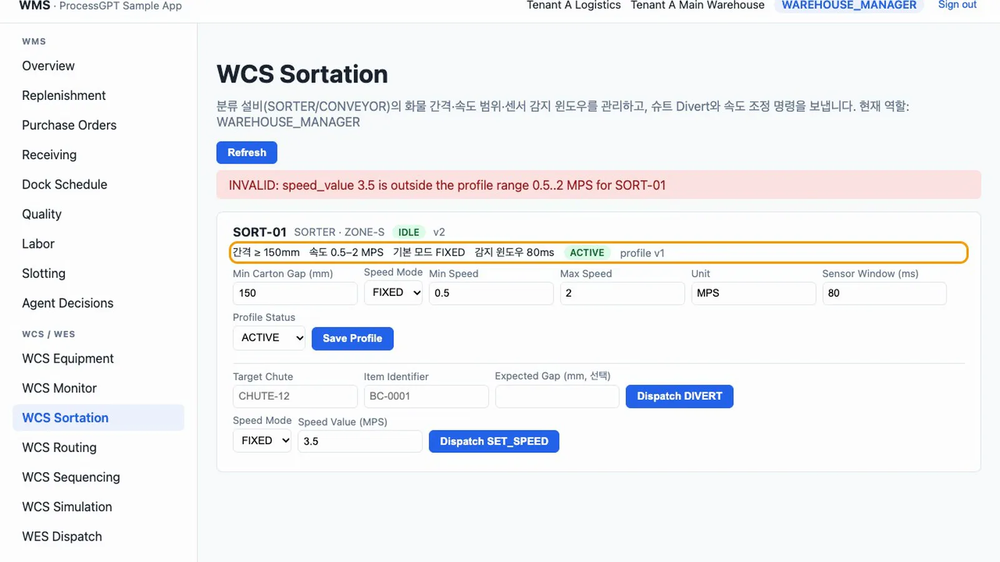
속도 범위 거부 - 걸림과 자동 장애. Target Chute
CHUTE-12, Item IdentifierBC-0001을 넣고 Dispatch DIVERT를 누릅니다. 게이트웨이가detail.outcome = JAM으로 실패를 보고하면, 아무도 장애를 등록하지 않아도SORTATION_JAM/CRITICAL장애가 등록됩니다.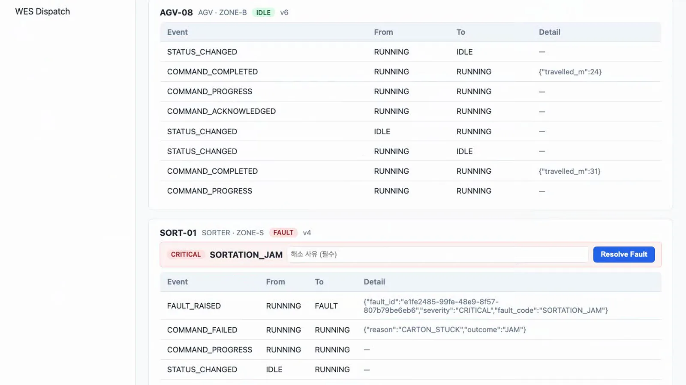
SORTATION_JAM - 병목 판정. 운반차 두 대의 진행 중 명령을 모두 완료로 보고합니다. WCS Routing을 엽니다.
AGV-07은 최근 장애 1 / 1로 기준에 도달해병목(FAULT_FREQUENCY_EXCEEDED)으로 판정되고,AGV-08은 최근 장애 0 / 1입니다. 판정 결과는 저장된 값이 아니라 조회할 때 계산한 값입니다. 관찰 구간은 30분으로 고정되어 있고, 임계값은 설비 유형별 정책으로 바꿀 수 있습니다.
병목 판정 - 병목 회피. WES Dispatch에서 Dispatch Mode
WAVELESS로 업무 오더를 만듭니다. 병목이 아닌AGV-08에 즉시 배정됩니다.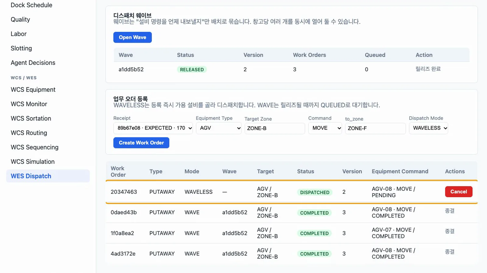
AGV-08로 배정 - 강제 제외.
AGV-08의 명령을 완료로 보고한 뒤 WCS Routing에서 제외 사유(예: 계획 정비)를 넣고 Exclude from Routing을 누릅니다. 다시WAVELESS업무 오더를 만들면 남은AGV-07에 배정됩니다. 병목은 배정을 금지하지 않고 우선순위만 낮추며, 강제 제외만 배정을 금지합니다.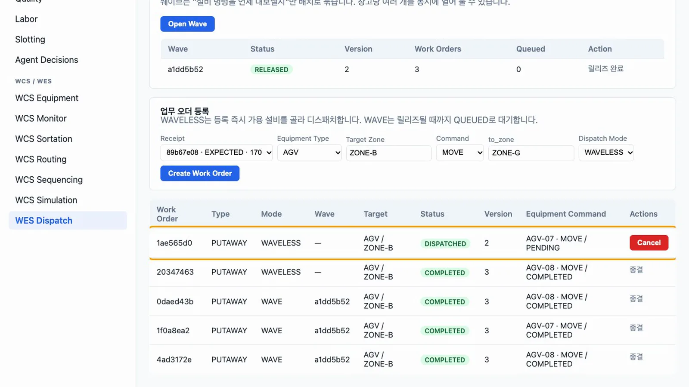
AGV-07로 배정
확인 문제#
창고 관리자가 명령 완료를 직접 보고할 수 있나요?
할 수 없습니다. 결과 보고는 WCS_GATEWAY 역할만 할 수 있습니다. 명령을 내리는 쪽과 보고하는 쪽을 데이터베이스 권한에서 나눴습니다.
에이전트나 게이트웨이가 장애를 해소할 수 있나요?
할 수 없습니다. 장애 해소는 WCS_OPERATOR, WAREHOUSE_MANAGER, WMS_ADMIN만 할 수 있습니다. 현장 확인을 거친 사람의 판단으로 봅니다.
병목으로 표시된 설비는 업무를 받지 않나요?
받습니다. 병목은 후순위일 뿐이라 다른 후보가 없으면 그 설비가 선택됩니다. 업무를 아예 받지 않게 하려면 Exclude from Routing으로 강제 제외합니다.